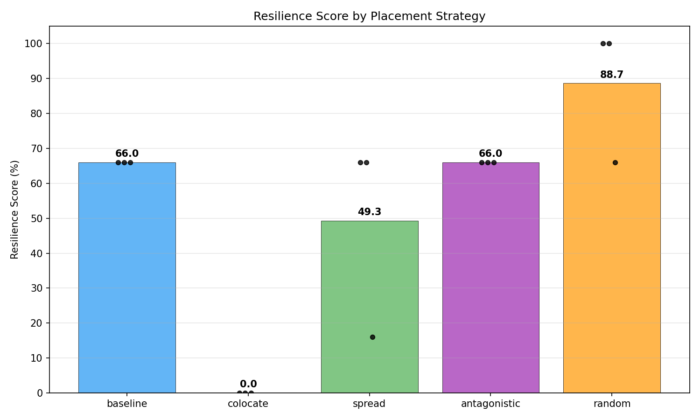
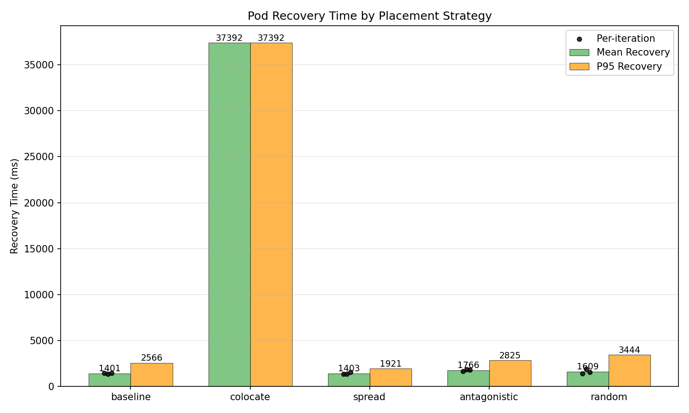
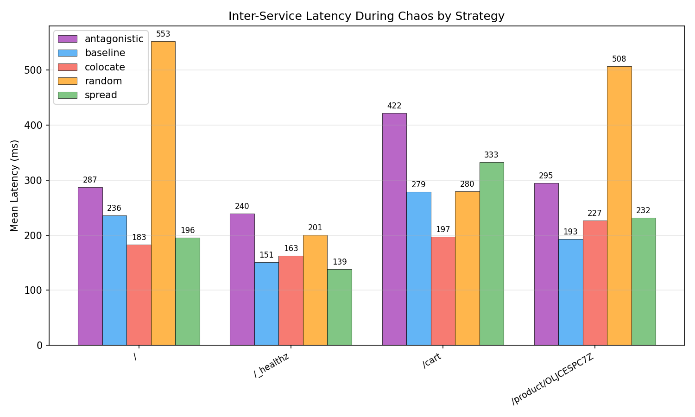
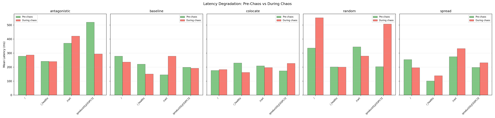
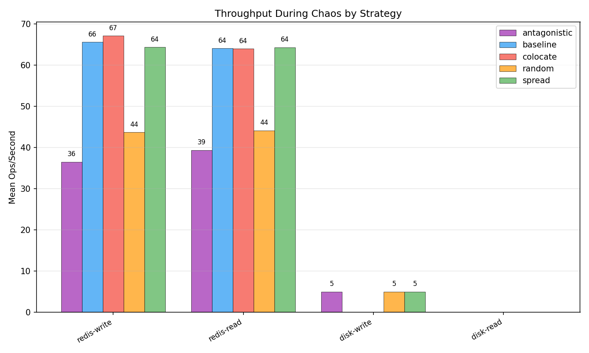
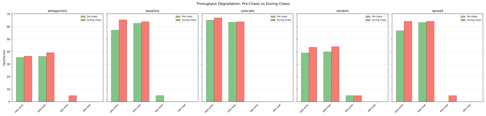
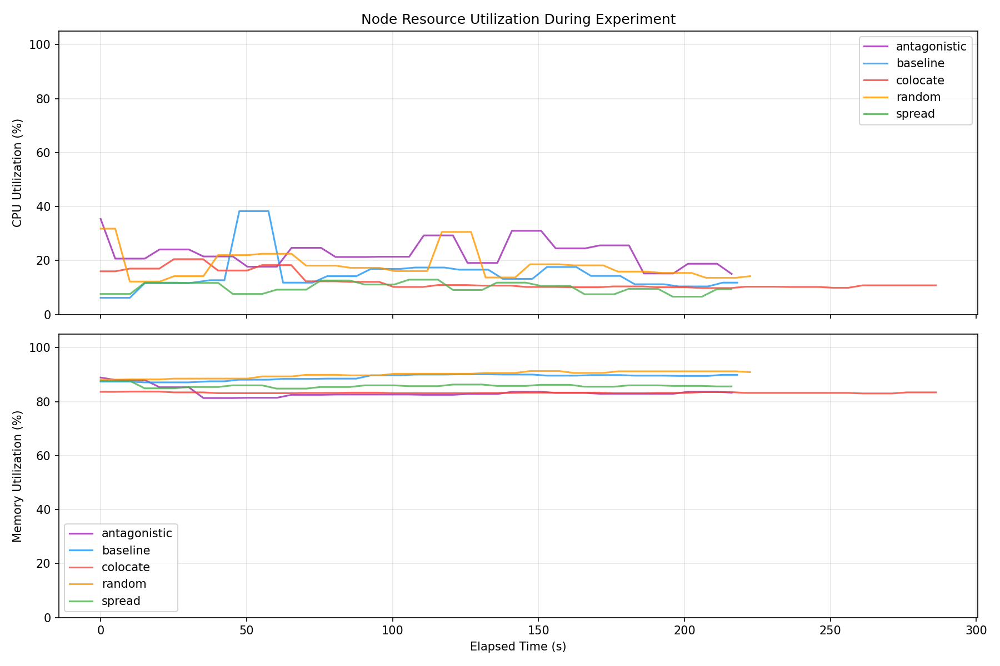
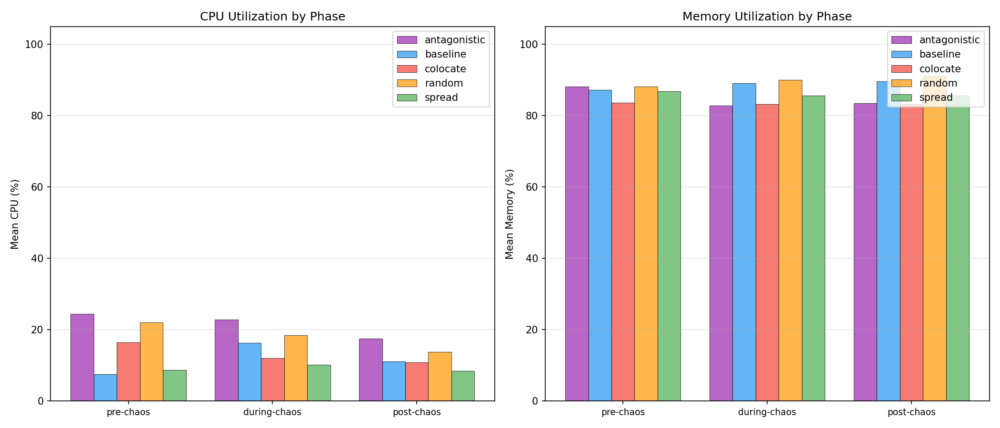
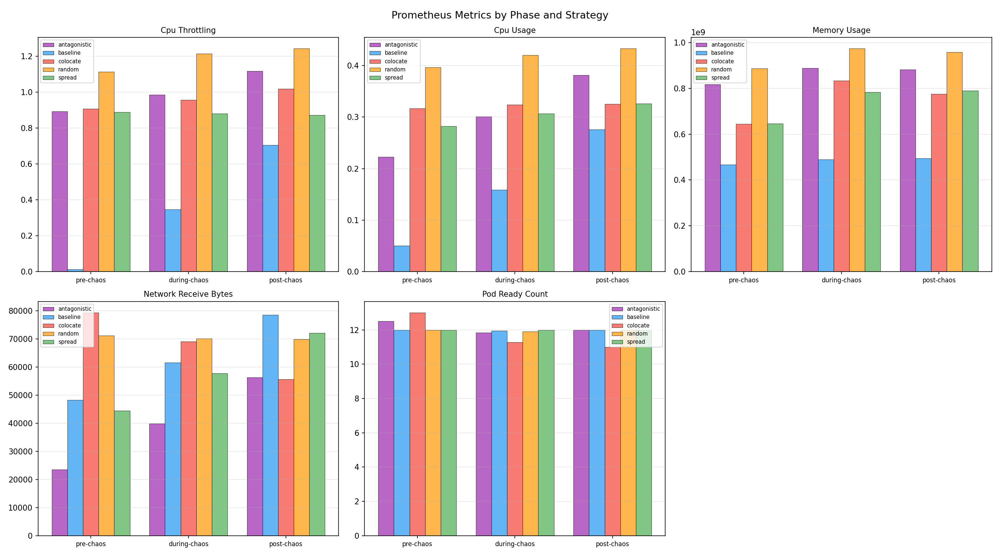

| Strategy | Runs | Avg Resilience Score | Pass Rate | Mean Recovery (ms) | Median Recovery (ms) | P95 Recovery (ms) |
|---|---|---|---|---|---|---|
| antagonistic | 3 | 66.0 | 0% | 1765.6 | 1801.0 | 2825.0 |
| baseline | 3 | 66.0 | 0% | 1401.3 | 1420.8 | 2566.0 |
| colocate | 3 | 0.0 | 0% | 37392.0 | 37392.0 | 37392.0 |
| random | 3 | 88.7 | 67% | 1608.7 | 1534.1 | 3444.0 |
| spread | 3 | 49.3 | 0% | 1402.9 | 1335.4 | 1921.0 |
| Strategy | Route | Pre-Chaos Mean (ms) | During Chaos Mean (ms) | During Chaos P95 (ms) | Post-Chaos Mean (ms) | Errors During Chaos |
|---|---|---|---|---|---|---|
| antagonistic | / | 277.9 | 287.0 | 588.7 | 212.0 | 5 |
| antagonistic | /_healthz | 241.6 | 239.7 | 399.6 | 181.7 | 0 |
| antagonistic | /cart | 371.5 | 421.9 | 2022.7 | 205.8 | 0 |
| antagonistic | /product/OLJCESPC7Z | 520.7 | 294.5 | 576.9 | 165.0 | 5 |
| baseline | / | 278.3 | 235.9 | 381.3 | 379.2 | 4 |
| baseline | /_healthz | 221.2 | 151.1 | 287.0 | 178.1 | 0 |
| baseline | /cart | 145.3 | 278.8 +92% | 391.8 | 325.1 | 0 |
| baseline | /product/OLJCESPC7Z | 198.9 | 192.6 | 311.5 | 410.9 | 5 |
| colocate | / | 176.4 | 182.6 | 316.1 | n/a | 55 |
| colocate | /_healthz | 229.9 | 162.6 | 372.7 | 219.9 | 0 |
| colocate | /cart | 208.8 | 196.9 | 299.9 | 182.6 | 0 |
| colocate | /product/OLJCESPC7Z | 173.6 | 227.0 | 379.5 | n/a | 55 |
| random | / | 336.5 | 552.7 +64% | 2898.0 | 277.1 | 0 |
| random | /_healthz | 201.3 | 201.0 | 400.5 | 201.5 | 0 |
| random | /cart | 344.7 | 279.7 | 532.1 | 234.1 | 0 |
| random | /product/OLJCESPC7Z | 203.7 | 507.5 +149% | 2536.9 | 207.4 | 0 |
| spread | / | 254.3 | 195.8 | 386.0 | 222.3 | 6 |
| spread | /_healthz | 101.2 | 138.6 | 208.3 | 85.2 | 0 |
| spread | /cart | 274.7 | 332.6 | 1295.0 | 172.9 | 0 |
| spread | /product/OLJCESPC7Z | 198.1 | 231.8 | 373.4 | 146.0 | 6 |
| Strategy | Operation | Pre-Chaos Ops/s | During Chaos Ops/s | During Chaos Latency (ms) | During Chaos Bandwidth | Post-Chaos Ops/s |
|---|---|---|---|---|---|---|
| antagonistic | redis-read | 36.3 | 39.3 | 25.52 | n/a | 55.0 |
| antagonistic | redis-write | 35.4 | 36.5 | 27.56 | n/a | 46.6 |
| antagonistic | disk-read | n/a | n/a | n/a | n/a | n/a |
| antagonistic | disk-write | n/a | 5.0 | 200.00 | 2.5 MB/s | n/a |
| baseline | redis-read | 62.8 | 64.0 | 15.74 | n/a | 71.3 |
| baseline | redis-write | 57.4 | 65.6 | 15.38 | n/a | 45.5 |
| baseline | disk-read | n/a | n/a | n/a | n/a | n/a |
| baseline | disk-write | 5.0 | n/a | n/a | n/a | n/a |
| colocate | redis-read | 63.6 | 64.0 | 15.68 | n/a | 64.3 |
| colocate | redis-write | 65.2 | 67.1 | 14.97 | n/a | 65.6 |
| colocate | disk-read | n/a | n/a | n/a | n/a | n/a |
| colocate | disk-write | n/a | n/a | n/a | n/a | n/a |
| random | redis-read | 40.0 | 44.1 | 23.33 | n/a | 57.1 |
| random | redis-write | 39.1 | 43.7 | 24.04 | n/a | 37.6 |
| random | disk-read | n/a | n/a | n/a | n/a | n/a |
| random | disk-write | 5.0 | 5.0 | 200.00 | 2.5 MB/s | n/a |
| spread | redis-read | 63.4 | 64.3 | 15.63 | n/a | 63.4 |
| spread | redis-write | 56.8 | 64.3 | 15.71 | n/a | 68.4 |
| spread | disk-read | n/a | n/a | n/a | n/a | n/a |
| spread | disk-write | n/a | 5.0 | 200.00 | 2.5 MB/s | n/a |
| Strategy | Phase | Mean CPU (%) | Mean Memory (%) | Samples |
|---|---|---|---|---|
| antagonistic | pre-chaos | 24.4 | 88.2 | 4 |
| antagonistic | during-chaos | 22.8 | 82.8 | 37 |
| antagonistic | post-chaos | 17.5 | 83.5 | 3 |
| baseline | pre-chaos | 7.5 | 87.3 | 4 |
| baseline | during-chaos | 16.3 | 89.1 | 36 |
| baseline | post-chaos | 11.1 | 89.7 | 4 |
| colocate | pre-chaos | 16.5 | 83.7 | 4 |
| colocate | during-chaos | 12.1 | 83.2 | 50 |
| colocate | post-chaos | 10.8 | 83.3 | 4 |
| random | pre-chaos | 22.0 | 88.2 | 4 |
| random | during-chaos | 18.4 | 90.1 | 37 |
| random | post-chaos | 13.8 | 91.1 | 4 |
| spread | pre-chaos | 8.7 | 86.9 | 4 |
| spread | during-chaos | 10.2 | 85.7 | 37 |
| spread | post-chaos | 8.5 | 85.7 | 3 |
| Strategy | Metric | Phase | Mean | Max | Samples |
|---|---|---|---|---|---|
| antagonistic | cpu_throttling | pre-chaos | 0.8921 | 0.9032 | 2 |
| antagonistic | cpu_throttling | during-chaos | 0.9840 | 1.0575 | 18 |
| antagonistic | cpu_throttling | post-chaos | 1.1168 | 1.1238 | 2 |
| antagonistic | cpu_usage | pre-chaos | 0.2227 | 0.2237 | 2 |
| antagonistic | cpu_usage | during-chaos | 0.3008 | 0.3598 | 18 |
| antagonistic | cpu_usage | post-chaos | 0.3818 | 0.3877 | 2 |
| antagonistic | memory_usage | pre-chaos | 817383424.0000 | 836452352.0000 | 2 |
| antagonistic | memory_usage | during-chaos | 888583281.7778 | 910163968.0000 | 18 |
| antagonistic | memory_usage | post-chaos | 881891328.0000 | 882008064.0000 | 2 |
| antagonistic | network_receive_bytes | pre-chaos | 23484.6526 | 24156.7303 | 2 |
| antagonistic | network_receive_bytes | during-chaos | 39843.7154 | 56021.1302 | 18 |
| antagonistic | network_receive_bytes | post-chaos | 56340.3791 | 56441.1294 | 2 |
| antagonistic | pod_ready_count | pre-chaos | 12.5000 | 13.0000 | 2 |
| antagonistic | pod_ready_count | during-chaos | 11.8333 | 12.0000 | 18 |
| antagonistic | pod_ready_count | post-chaos | 12.0000 | 12.0000 | 2 |
| baseline | cpu_throttling | pre-chaos | 0.0123 | 0.0148 | 2 |
| baseline | cpu_throttling | during-chaos | 0.3461 | 0.6115 | 18 |
| baseline | cpu_throttling | post-chaos | 0.7041 | 0.7316 | 2 |
| baseline | cpu_usage | pre-chaos | 0.0504 | 0.0521 | 2 |
| baseline | cpu_usage | during-chaos | 0.1587 | 0.2481 | 18 |
| baseline | cpu_usage | post-chaos | 0.2756 | 0.2841 | 2 |
| baseline | memory_usage | pre-chaos | 466688000.0000 | 488308736.0000 | 2 |
| baseline | memory_usage | during-chaos | 489125660.4444 | 542896128.0000 | 18 |
| baseline | memory_usage | post-chaos | 494950400.0000 | 495128576.0000 | 2 |
| baseline | network_receive_bytes | pre-chaos | 48195.3652 | 48614.2080 | 2 |
| baseline | network_receive_bytes | during-chaos | 61561.6433 | 74794.2697 | 18 |
| baseline | network_receive_bytes | post-chaos | 78524.3200 | 80101.9051 | 2 |
| baseline | pod_ready_count | pre-chaos | 12.0000 | 12.0000 | 2 |
| baseline | pod_ready_count | during-chaos | 11.9444 | 12.0000 | 18 |
| baseline | pod_ready_count | post-chaos | 12.0000 | 12.0000 | 2 |
| colocate | cpu_throttling | pre-chaos | 0.9064 | 0.9321 | 2 |
| colocate | cpu_throttling | during-chaos | 0.9563 | 0.9907 | 25 |
| colocate | cpu_throttling | post-chaos | 1.0177 | 1.0386 | 2 |
| colocate | cpu_usage | pre-chaos | 0.3166 | 0.3219 | 2 |
| colocate | cpu_usage | during-chaos | 0.3242 | 0.3455 | 25 |
| colocate | cpu_usage | post-chaos | 0.3253 | 0.3297 | 2 |
| colocate | memory_usage | pre-chaos | 644618240.0000 | 695205888.0000 | 2 |
| colocate | memory_usage | during-chaos | 833331691.5200 | 876273664.0000 | 25 |
| colocate | memory_usage | post-chaos | 776136704.0000 | 792662016.0000 | 2 |
| colocate | network_receive_bytes | pre-chaos | 79280.4025 | 79669.0381 | 2 |
| colocate | network_receive_bytes | during-chaos | 69088.9343 | 81094.8763 | 25 |
| colocate | network_receive_bytes | post-chaos | 55587.1848 | 55627.5146 | 2 |
| colocate | pod_ready_count | pre-chaos | 13.0000 | 13.0000 | 2 |
| colocate | pod_ready_count | during-chaos | 11.2800 | 13.0000 | 25 |
| colocate | pod_ready_count | post-chaos | 11.0000 | 11.0000 | 2 |
| random | cpu_throttling | pre-chaos | 1.1129 | 1.1472 | 2 |
| random | cpu_throttling | during-chaos | 1.2130 | 1.2543 | 19 |
| random | cpu_throttling | post-chaos | 1.2422 | 1.2487 | 2 |
| random | cpu_usage | pre-chaos | 0.3964 | 0.3986 | 2 |
| random | cpu_usage | during-chaos | 0.4204 | 0.4356 | 19 |
| random | cpu_usage | post-chaos | 0.4331 | 0.4335 | 2 |
| random | memory_usage | pre-chaos | 886599680.0000 | 887222272.0000 | 2 |
| random | memory_usage | during-chaos | 974330394.9474 | 1004761088.0000 | 19 |
| random | memory_usage | post-chaos | 958181376.0000 | 958504960.0000 | 2 |
| random | network_receive_bytes | pre-chaos | 71203.2408 | 71729.7206 | 2 |
| random | network_receive_bytes | during-chaos | 70131.2863 | 72454.6266 | 19 |
| random | network_receive_bytes | post-chaos | 69773.9318 | 70557.7627 | 2 |
| random | pod_ready_count | pre-chaos | 12.0000 | 12.0000 | 2 |
| random | pod_ready_count | during-chaos | 11.8947 | 12.0000 | 19 |
| random | pod_ready_count | post-chaos | 12.0000 | 12.0000 | 2 |
| spread | cpu_throttling | pre-chaos | 0.8871 | 0.9029 | 2 |
| spread | cpu_throttling | during-chaos | 0.8797 | 0.9080 | 19 |
| spread | cpu_throttling | post-chaos | 0.8719 | 0.8719 | 1 |
| spread | cpu_usage | pre-chaos | 0.2827 | 0.2863 | 2 |
| spread | cpu_usage | during-chaos | 0.3070 | 0.3298 | 19 |
| spread | cpu_usage | post-chaos | 0.3265 | 0.3265 | 1 |
| spread | memory_usage | pre-chaos | 647051264.0000 | 654909440.0000 | 2 |
| spread | memory_usage | during-chaos | 783125018.9474 | 837025792.0000 | 19 |
| spread | memory_usage | post-chaos | 790331392.0000 | 790331392.0000 | 1 |
| spread | network_receive_bytes | pre-chaos | 44457.9707 | 45167.2665 | 2 |
| spread | network_receive_bytes | during-chaos | 57751.6541 | 69131.5963 | 19 |
| spread | network_receive_bytes | post-chaos | 72100.2851 | 72100.2851 | 1 |
| spread | pod_ready_count | pre-chaos | 12.0000 | 12.0000 | 2 |
| spread | pod_ready_count | during-chaos | 12.0000 | 12.0000 | 19 |
| spread | pod_ready_count | post-chaos | 12.0000 | 12.0000 | 1 |








